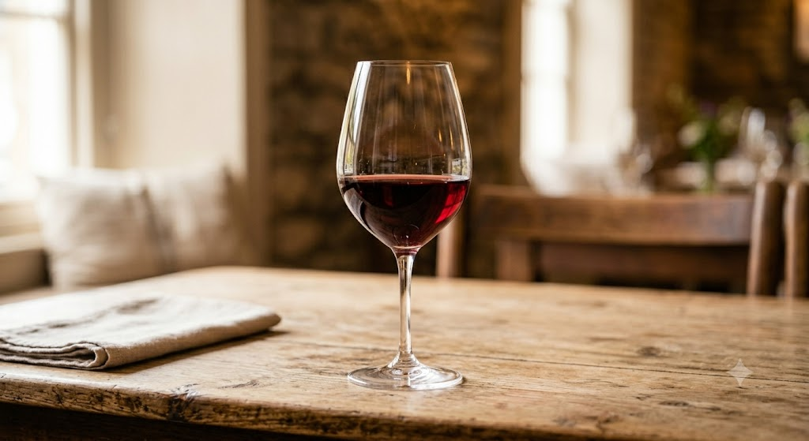
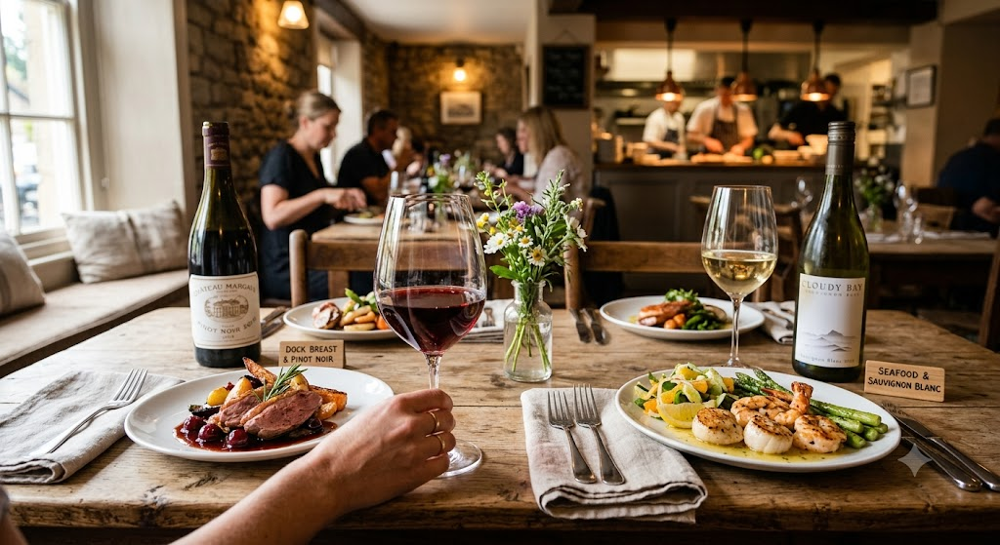
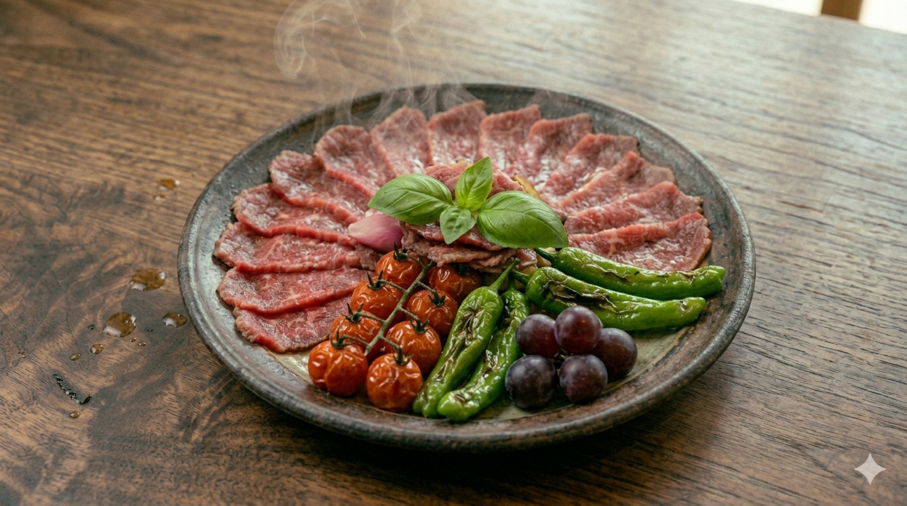

仙台 一番町
ソムリエ厳選のワインと、三陸の旬が奏でる
毎日通いたくなる「良い場所（Bonne Place）」
RESERVATION
022-211-7702

地下鉄広瀬通駅から徒歩3分。一番町の喧騒を離れた先に、大人の隠れ家があります。
「ワインをもっと身近に、もっと美味しく」。
ソムリエ資格を持つオーナーが、三陸の豊かな海の幸や地元の食材を活かした本格フレンチベースの料理に、最適なワインをエスコートいたします。
Bonne Place

RECOMMENDED
毎朝仕入れる新鮮な魚介。その時々の旬を最も美味しい形で。
厚くカットされた帆立やサーモンの甘みに、キリッと冷えた白ワイン。
シンプルだからこそ、素材の質とソムリエの目利きが光る一皿です。
グラスワイン
常時10種類以上
厳選素材
三陸産直魚介
VOICE
「金のいぶきを使用したフォアグラと黒トリュフの濃厚なリゾット」は、まさに悶絶級の美味しさでした。お食事に合うワインを丁寧に提案してくださるので、初心者でも安心して楽しめます。
20代 女性 / デート利用
新作コースをいただきました。いわて短角牛のハンバーグはジューシーで赤ワインソースとの相性抜群。ソムリエさんの知識も深く、ワイン好きにはたまりません。
30代 女性 / 記念日利用
40年もののポートワインに感動。お通しのキャロットスープからデザートまで隙がありません。落ち着いたカウンターで、一人でも至福の時間を過ごせます。
40代 男性 / 会食利用
| 店名 | ワインバー ボンヌプラス |
|---|---|
| 所在地 | 〒980-0811 宮城県仙台市青葉区一番町4丁目3-11 2M4・3ビル 1F |
| 電話番号 | 022-211-7702 |
| 営業時間 | 18:00 〜 24:00 |
| 定休日 | 日曜日 |
| SNS |